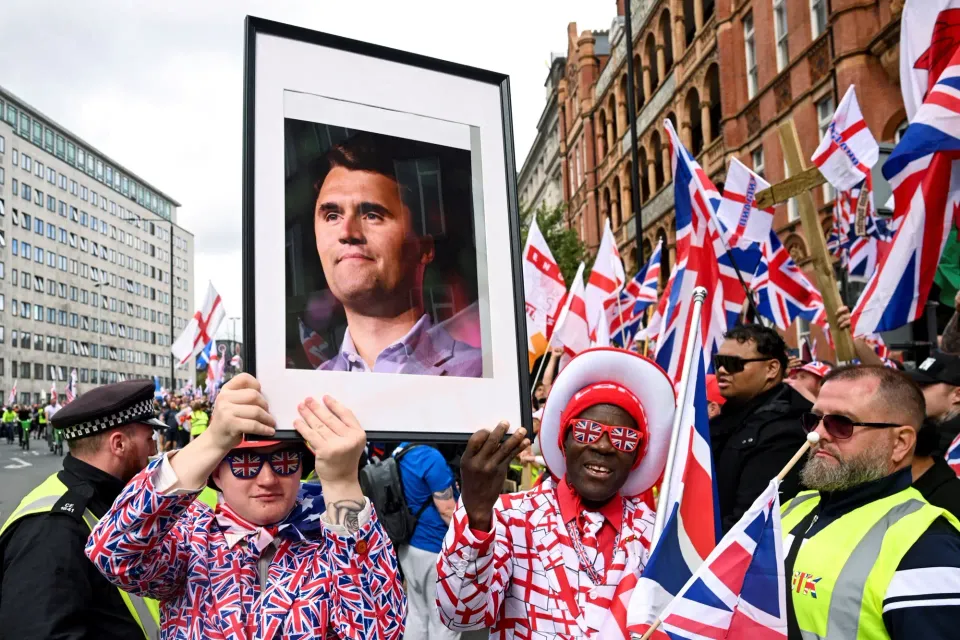

世界苦茶09月15日新闻 | 34条 | 羅永浩西貝爭議迅速放大

羅永浩西貝爭議迅速放大 | 美方就韓國移民衝擊事件道歉 | 烏克蘭限制網速抗偵查無人機 | 倫敦十萬人右翼遊行導致衝突
苦茶数据
美元兑人民币：7.12（昨日7.12，前日7.11）
美元兑日元：147.67（昨日147.36，前日147.46）
上证指数：休市（昨日3870，前日3870）
标普500指数：休市（昨日6584，前日6587）
比特币：115503（昨日115941，前日115241）
布伦特原油：66.99（昨日65.95，前日67.25）
中国新闻
• 中瑞庆建交75年 ：中国国家主席习近平说，中国和瑞士是不同社会制度、不同发展阶段国家友好合作的典范。据中新社报道，习近平星期天同瑞士联邦主席凯勒-祖特尔互致贺电，庆祝两国建交75周年。习近平称，中国和瑞士是不同社会制度、不同发展阶段国家友好合作的典范。建交75年来，双方携手培育“平等、创新、共赢”的中瑞合作精神，双多边领域合作成果丰硕，增进了两国人民福祉，为维护多边主义和自由贸易作出了积极贡献。
• 中美马德里商贸会谈 ：中美双方星期天在西班牙马德里就有关经贸问题举行会谈。央视新闻客户端星期天晚上8时24分报道这项消息。中国副总理何立峰于星期天至星期三率团赴马德里，与美国财长贝森特举行会谈。双方将讨论关税、出口管制及TikTok等经贸问题。
• 港同性登记草案否决 ：《同性伴侣关系登记条例草案》早前被香港立法会大比数否决。香港律师会会长汤文龙星期日说，立法会议员根据民意否决此次草案，但“不代表以后不再做”。他相信政府此后会继续与不同持份者磋商。综合《星岛日报》和香港电台报道，汤文龙当天出席活动后受访时说，政府按终审法院裁决订立替代框架，并积极筹备法案予立法会审议，立法会议员根据民意否决此次草案，“不代表以后不再做”。他相信，政府此后会继续与不同持份者磋商，律师会会关注政府再度提交立法会的草案，如何符合终审法院裁决。
• 韩外长拟访华谈APEC ：据韩国外交消息人士星期天透露，韩国外交部长官赵显将于下星期三前后访问中国，在北京同中国外交部长王毅举行会晤，围绕韩中关系问题进行讨论。韩联社报道，若此次中韩外长会谈成行，预计首要议题将是中国国家主席习近平是否出席下月在韩国庆州举行的亚太经合组织第32次领导人非正式会议。尽管中国尚未明确答复，但外界普遍认为习近平出席的可能性较大。朝鲜半岛问题也有望成为重点议题。在9月初中国纪念抗战胜利活动期间，中朝领导人并没有谈到朝鲜半岛无核化问题，外界由此担心中国是否改变“不容许朝鲜拥核”的立场。一般预料，赵显将在会谈中，重申中韩在实现半岛无核化目标上的共识，并再次强调中国应发挥建设性作用。
• 《731》宣布全球上映 ：中国抗战主题电影《731》星期日发布全球上映海报，将在澳大利亚、美国、加拿大、韩国、新加坡、马来西亚等多地上映。中国央视新闻发布消息称，《731》即将全球多地上映，“让血色记忆成为全人类的警示。9月18日起电影上映，让和平的信念在全球回响！”电影海报列明了全球上映时间，包括澳大利亚、新西兰、美国、加拿大、韩国、新加坡、马来西亚、俄罗斯、英国、德国和法国等。
• 王毅促中欧做朋友合作 ：中共中央政治局委员、外交部长王毅说，中欧应在百年变局中做出正确选择，应当做朋友而不是对手，应当合作而不是对抗。据中新社报道，当地时间星期，王毅在卢布尔雅那同斯洛文尼亚副总理兼外长法永会谈后共同会见记者。王毅说，双方的会谈全面深入，取得广泛共识。中国是第一批同斯洛文尼亚建交的国家。中国外交一以贯之的传统，就是大小国家一律平等。30多年来，无论国际风云如何变幻，中方保持外交政策连续性和稳定性，始终同斯洛文尼亚平等相待，友好合作，互利共赢，成为不同大小、不同社会制度国家相处的典范。时间已经充分证明，中斯是彼此可以信赖的朋友和伙伴。矗立在卢布尔雅那市中心的中斯友好纪念碑，正是中斯友谊的生动写照。中方愿同斯方一道，不断加强各领域务实合作，更好造福两国人民，谱写中斯友谊新的篇章。
• 南部战区警告菲勿挑衅 ：中国解放军南部战区星期日指责菲律宾拉拢域外国家组织“联合巡航”，破坏地区和平稳定，要求菲方立即停止在南中国海挑起事端、升级紧张局势，并说引入外部势力撑腰注定徒劳无益。微信公号“南部战区”星期六发布消息，新闻发言人田军里指出，中国人民解放军南部战区9月12日至13日位南中国海海域进行例行巡航。田军里说，菲律宾频繁拉拢域外国家组织所谓“联合巡航”，散播南中国海非法主张，破坏地区和平稳定。南部战区正告菲方立即停止在南中国海挑起事端、升级紧张局势，引入外部势力撑腰注定徒劳无益。战区部队持续保持高度戒备，坚决捍卫国家主权安全和南中国海地区和平稳定，任何滋事搅局的企图都不会得逞。
• 中邀特朗普访华未获回应 ：英国媒体星期日引述知情人士说，中国已邀请美国总统特朗普访华并与中国国家主席习近平会面，但白宫尚未回应。两国在关税和芬太尼问题上存在较大分歧，降低了中美元首在北京举行峰会的可能性。根据路透社引述《金融时报》报道，中美谈判缺乏进展，降低了特朗普和习近平在北京会面的可能性，二人更有可能在韩国10月举行的亚太经合组织论坛期间，举行一场低调的会晤。中国外交部长王毅与美国国务卿鲁比奥星期三通话，有分析认为这是为“习特会”营造气氛和条件。鲁比奥会后还对媒体说，双方都有“强烈意愿”举行首脑峰会。
• 日驻沪总领馆提醒在苏安全 ：中国“九一八事变”纪念日临近，有消息称日本人在江苏省苏州市被卷入纠纷，日本驻上海总领事馆星期五通过邮件和官网提醒日本人注意确保安全。据日本共同社报道，据称此次纠纷发生在星期五凌晨2时前后。住在苏州的多名日本人称，日本人遭到中国人袭击的信息在微信群里扩散。日本驻上海总领馆表示“正在确认事实关系”以及是否有受害情况。 日本驻中国大使馆星期四也曾发邮件提醒在华日侨要注意反日情绪高涨，携儿童出行时要充分采取防范措施。
亚太印太新闻
• 日本老龄人口新高 ：日本总务部星期天公布最新统计数据显示，日本目前有65岁以上老年人3619万人，占全国总人口的29.4%，创历史新高。据新华社报道，虽然日本65岁以上老年人较去年减少5万人，但老年人占总人口比率上升0.1个百分点至29.4%。在全球人口超过4000万的38个国家中，日本老年人占比最高。数据也显示，按性别划分，65岁以上男性老年人有1568万人，女性有2051万人。按年龄层划分，70岁以上老年人有2901万人，75岁以上有2124万人，80岁以上有1289万人，较上年均有所增加。
• 尼泊尔临时总理承诺反腐 ：尼泊尔临时总理卡尔基承诺，会响应抗议者终结腐败的诉求。尼泊尔近期爆发大规模青年示威，抗议政府封禁社媒平台和长期未能解决腐败问题。接连两天的示威迫使前总理奥利下台。政府最新统计显示，示威期间的镇压导致72人死亡。73岁的前首席大法官卡尔基星期五宣誓就任临时总理，成为尼泊尔首位担任这一职务的女性。
• 尼泊尔骚乱死亡升至72 ：尼泊尔卫生部星期天说，上周反贪腐抗议活动的死亡人数已上升至72人，搜救队继续在骚乱中受损的购物中心和其他建筑物里搜寻遇难者遗体。路透社报道，卫生部发言人布达托基说：“正陆续找出许多在购物中心、房屋，以及其他遭纵火或袭击的建筑物中丧生的人员遗体。”卫生部最新数据显示，在尼泊尔数十年来最严重的骚乱中，至少有2113人受伤。
• 美方就突袭拘韩工致歉 ：韩国方面称，美国高级外交官星期天对美国移民局突袭拘留300多名韩国工人表示遗憾，并承诺不再发生此类事件。路透社报道，韩国外交部在一份声明中说，美国常务副国务卿兰道星期天会见了韩国外交部第一副部长朴允珠。韩外交部说，兰道对此次事件深表遗憾，并表示希望将它作为加强韩美关系的转机。
• 台国防展将首展自造潜舰 ：台湾历届最大规模国防展本月18日将登场，台湾首艘自制潜舰“海鲲号”首度在展会中亮相，同时也将展示对美军购的M1A2T坦克、高机动性多管火箭系统及105公厘轮型战车D3样车。综合中央社、时报资讯和台湾国际航太暨国防工业展网站消息，两年一度的台湾国际航太暨国防工业展9月18日至20日将在台北南港展览馆登场。本届主题为“先进国防、永续飞行、韧性供应链、无人未来”，共有14国、逾400家厂商参展，其中龙德造船、中信造船、台湾国际造船等台湾本土造船厂首度参展，聚焦无人水面载具与舰艇系统整合。此外，“福卫八号”是台湾首个自制光学遥测卫星星系，预计10月搭乘 SpaceX 猎鹰九号升空。台湾军备局将在本届展览上展出上月首度披露的四款多功能无人机，包括FPV无人机、投弹式无人机、自杀式无人机、监侦型无人机，其中投弹型、自杀型为首次曝光。
• 国民党主席选战民调定人 ：台湾在野的国民党主席选举将在下个月举行，星期一至星期五领表登记。台北市前市长郝龙斌早前说，他和“战斗蓝”发起人、前中广董事长赵少康将择一出马。赵少康星期天说，郝龙斌今明两天做民调，由民调结果决定谁出马。综合《联合报》、《自由时报》、《太报》等报道，赵少康星期天出席“中华民国”复兴岗校友会会员代表大会暨秋节联谊餐会，台北市长蒋万安、将登记参选国民党主席的立委罗智强、前立委郑丽文也出席活动。赵少康受访时说，郝龙斌星期天至星期一做民调，将视民调结果决定两人谁出马，并称这是最科学的方式。
• 网投显示郑丽文领先 ：国民党主席选举临近，在一项网络投票中，前立委郑丽文大幅领先。据中时新闻网报道，目前已有八人表态参选，资深媒体人黄𬀩瀚预言，最后能坚持到底的，会是孙文学校总校长张亚中、郑丽文、立委罗智强与前台北市长郝龙斌四人。黄𬀩瀚星期五在NOWnews《乡民大学问》YouTube节目中分析，张亚中长期主打党内正统路线，郑丽文则以鲜明战斗形象获得年轻选民关注，罗智强虽屡次挑战党内传统势力，但基层经营不容小觑，郝龙斌则拥有资深辈分与派系支持。这四人是四种不同路线的代表人物。
科技新闻
• PMC起诉谷歌AI摘要侵权 ：谷歌公司面临一项新诉讼，指控该公司非法使用新闻出版商的內容创建损害其业务的AI摘要。该诉讼来自潘世奇媒体公司，其拥有《滚石》《公告牌》《综艺》《好莱坞报道者》《Deadline》《Vibe》和《Artforum》等行业出版物。尽管PMC的诉讼是首个针对谷歌及其母公司Alphabet展示AI生成摘要的案件，但出版商和作者此前已就相关版权问题起诉过其他AI公司。潘世奇媒体CEO杰·彭斯克说：“作为全球领先的出版商，我们有责任保护PMC顶级新闻工作者和获奖新闻内容作为真相来源的价值。此外，我们有责任主动为数字媒体的未来而战，并维护其完整性 —— 所有这些正受到谷歌当前行为的威胁。”
• 特斯拉董事长为万亿薪酬辩护 ：特斯拉公司董事长萝宾德·诺姆为其向马斯克提供一万亿美元股票的决定辩护，称他是一位 “独一无二” 的首席执行官，必须付出超乎常人的努力并完成 “不可能的事情” 才能获得这项史无前例的奖励。德诺姆在帕洛阿尔托接受访谈时表示：“为了实现我们设定的宏愿目标，他必须投入超出大多数人所能做到的时间、精力和努力。这绝对不是轻而易举的事。这是个雄心勃勃的计划，他理应获得这项前所未有的奖赏。”德诺姆也为董事会在马斯克充满争议的政治立场问题上采取的放手态度辩护，强调他享有言论自由的权利，以及她认为对特斯拉至关重要的独特品质。
• 大英百科起诉答案引擎侵权 ：人工智能网络搜索公司Perplexity正面临另一项指控版权和商标侵权的诉讼，本次起诉方为大英百科全书与韦氏词典。拥有韦氏词典的百年出版商大英百科全书公司于 9月10日在纽约联邦法院对Perplexity提起诉讼。诉状中，两家公司指控Perplexity的“答案引擎”抓取其网站内容、窃取其网络流量并抄袭其受版权保护的素材。大英百科全书公司同时指控，当Perplexity将两家公司名称与虚假或不完整内容相关联时，构成商标侵权。法庭文件包含连续并列的截图，显示Perplexity的搜索结果与韦氏词典的定义完全相同。
财经新闻
• “十五五”增量或39万亿 ：中国全国政协经济委员会副主任、原中央财经领导小组办公室副主任杨伟民说，“十五五”时期，中国总需求增量或达39万亿元人民币。这些总需求增量将更多从扩大居民消费中产生。根据中新社报道，杨伟民当日在第二十二届中国改革论坛上说，从拉动经济的“三驾马车”来看，资本形成占总需求的比重已在2009年至2014年达到峰值后开始下降，投资增速也逐步放缓。“十五五”期间投资增长虽然仍有较大空间，但与过去几个五年规划期相比，增长空间收窄。从净出口来看，“十五五”时期，国际环境不确定性仍存，净出口对增长的贡献率较难维持目前的高位。
• 娃哈哈或更名“娃小宗” ：娃哈哈集团掌门人宗馥莉控制的宏胜饮料，据报或启用新品牌“娃小宗”替代“娃哈哈”。综合蓝鲸新闻、21世纪经济和南方都市报报道，杭州娃哈哈宏辉食品饮料有限公司“关于开展2026销售年度经销商沟通工作的通知”的一份内部文件星期六在网上流出。网传文件提及，“自娃哈哈集团创始人离世后，公司一直努力推进解决各项历史相关遗留问题。”为维护“娃哈哈”品牌使用的合规性，公司决定从2026年新的销售年度起，更换使用新品牌“娃小宗”。
• 西贝旗舰店客流降七成 ：陷入“预制菜”风波后，连锁餐厅西贝在北京市的最大门店堂食客流下降七成。据中新经纬报道，西贝六里桥旗舰店工作人员说，星期六中午，门店等位散客只排到37桌，相比上周六中午约140桌，客流减少七成以上。除了堂食客流下降外，门店当天外卖订单降幅也有12.8%。
• 西贝暂停后厨开放 ：陷入“预制菜”风波后，连锁餐厅西贝暂停后厨开放。据新浪财经报道，西贝星期天中午在内部平台发布通知，暂停门店后厨的参观。一位门店店员称，此举主要是为了保证后厨的正常运营。
• 澳投120亿澳元升级船厂 ：澳大利亚政府宣布投入120亿澳元用于升级船厂设施，以便支持未来核动力潜艇舰队的建设。法新社报道，澳洲国防部长马尔斯星期天公布这一计划时说，这项投资意义重大，将在10年内分阶段投入西澳大利亚州珀斯的造船与维修基地。澳洲2021年与英美两国签署核潜艇合作协议，此后便向珀斯的亨德森国防区投入资金。目前澳洲尚无核潜艇维护基础设施，当局计划在15年内至少引进三艘美国弗吉尼亚级核潜艇，并最终实现自主制造。
• 中对美芯片发起双重调查 ：中美新一轮经贸会谈在即，美国将多家半导体中企纳入出口管制实体清单，引起中国强烈反弹，北京接连对美国晶片行业发起反倾销和反歧视两项调查。中国商务部官网星期六晚连发两则公告，就美国对华集成电路领域相关措施发起反歧视立案调查；同时对原产美国的进口相关模拟晶片发起反倾销立案调查，这些晶片被用于助听器、Wi-Fi路由器和温度传感器等设备。中国商务部随后以发言人答记者问的形式在官网说，美国近年来在集成电路领域对华采取一系列禁止和限制措施，批评这些保护主义做法涉嫌对华歧视，是对中国发展先进计算晶片和人工智能等高科技产业的遏制打压，不仅危害中国发展利益，还损害全球半导体产业链供应链稳定。
俄乌战争
• 乌或限4G抗无人机 ：乌克兰总参谋长赫纳托夫星期天在接受乌克兰在线视频频道Novyny Live采访时说，在遭受俄方无人机袭击期间，乌克兰可能会有意降低移动通信质量，以防止网络被用于协调打击。路透社报道，俄罗斯近几个月加大了对乌克兰的无人机袭击力度，不断升级技术并增加投放数量，以最大程度地破坏战略目标和关键基础设施。赫纳托夫说：“这并不是中断移动通信，而是在特定区域限制通信质量，例如限制4G和5G通信。”
• 俄列宁格勒两起脱轨 ：俄罗斯列宁格勒州州长说，两列火车星期天凌晨在州内不同地方脱轨，造成一名列车司机死亡并扰乱铁路交通。法新社报道，这两起事故发生几小时之前，俄罗斯西部奥廖尔地区一段铁轨发生爆炸装置爆炸，造成三人死亡。州长德罗兹登科在Telegram上说：“列宁格勒加特契纳塞姆里诺车站附近一辆柴油机车脱轨，救援工作正在进行中。”
• 乌无人机袭俄乌法炼厂 ：俄罗斯官员说，一架乌克兰无人机击中俄最大炼油厂之一，引发火灾并造成轻微损坏。法新社报道，俄罗斯巴什科尔托斯坦共和国领导人哈比罗夫星期六在社媒Telegram发文说，一架乌克兰飞机型无人机，当天撞击俄罗斯巴什石油公司位于地区首府乌法市郊的炼油厂。当地距乌克兰前线约1400公里。社媒视频显示，一架无人机漂向炼油厂后在空中爆炸，火球腾空而起，浓烟滚滚冲天。
国际新闻
• 内塔尼亚胡扬言清除哈马斯 ：以色列总理内坦亚胡说，清除居住在卡塔尔的哈马斯领导人，将为所有人质获释和结束加沙战争扫清主要障碍。以色列本周早些时候对哈马斯在卡塔尔首都多哈的政要实施空袭，卡塔尔对此予以谴责，国际多方也对以色列袭击提出批评。综合路透社和新华社报道，内坦亚胡星期六在X发贴文说：“居住在卡塔尔的哈马斯恐怖头目根本不在乎加沙人民。他们阻挠所有停火尝试，只为无休止地拖延战争。”
• 伦敦十万人右翼游行冲突 ：英国首都伦敦爆发大规模右翼示威，超过10万人手持英格兰和英国国旗上街游行，并与警方发生冲突，20多名警员受伤，25人被捕。路透社报道，伦敦大都会警察局说，约11万人星期六在伦敦市中心示威游行，另有约5000人参加“抵制种族主义”的反示威抗议活动。警方当天将两方人马分隔开来。庞大的示威规模令警方难以招架。游行人群偏离原本获准的白厅路线，警方声称试图阻止示威者时遭遇“不可接受的暴力”，有警员被拳脚相向，还被投掷瓶子、信号弹和其他投射物。
• 美大学容许暴力阻讲 ：一项最新调查显示，美国大学生对言论自由的支持度持续下滑，约34%受访学生认为在某些情况下使用暴力阻止校园演讲是可以接受的。彭博社报道，这一趋势在右翼意见领袖查理·柯克日前遇刺身亡的背景下，尤显敏感，进一步引发社会对言论空间受限的担忧。这项调查由个体权利与表达自由基金会发布，历时六年，覆盖257所大学、超过6万名学生。结果显示，赞成通过起哄、阻拦甚至暴力手段来取消演讲的人数比率创下新高，且这一倾向已跨越党派、性别和种族界限。 （翻評：這個基金會有反cancel culture的背景，這個需要納入考慮。）
• 法国新总理保留两假日 ：法国新任总理勒科尔尼说，他决定放弃上届政府减少两个公共假日以改善财政状况的计划，将继续保留这些公共假日，使劳动者免受影响。新华社报道，9月初出任总理的勒科尔尼在法国《西南报》星期六发表的专访中说：“我希望减轻劳动者负担，因此决定不取消两个公共假日。”勒科尔尼表明，保留原有公共假日意味着要从别的渠道拓宽财政收入来源，这需要政府与社会各界进行广泛对话。他也誓言让财政开支更加公正。
• 拟向路州派千名国民警卫 ：美国媒体报道，美国特朗普政府已起草提案，计划向路易斯安那州部署1000名国民警卫队员，开展执法行动。《华盛顿邮报》星期六引述美国战争部的规划文件报道上述消息。特朗普政府将打击犯罪作为重点工作，报道披露，这些国民警卫预计部署在新奥尔良、巴吞鲁日等城市，协助执法。五角大楼拟定动员期持续到明年9月30日，但文件中并未说明启动日期。
• 委内瑞拉称美军强登渔船 ：委内瑞拉政府9月13日称，该国一艘渔船12日在其专属经济区内的布兰基亚岛东北方向48海里处海域正常捕捞作业时，遭美国海军“贾森·邓纳姆”号驱逐舰截停。18名持枪美军士兵非法登船，并占据这艘载有9名渔民的小船长达8个小时，其间阻断通信并阻挠正常作业。委政府指责美军此举是对委内瑞拉的直接挑衅，为美方在加勒比地区升级军事行动寻找借口，目的是推动委内瑞拉政权更迭。委内瑞拉外交部长希尔要求美军立即停止“危及加勒比地区安全与和平的行径”。